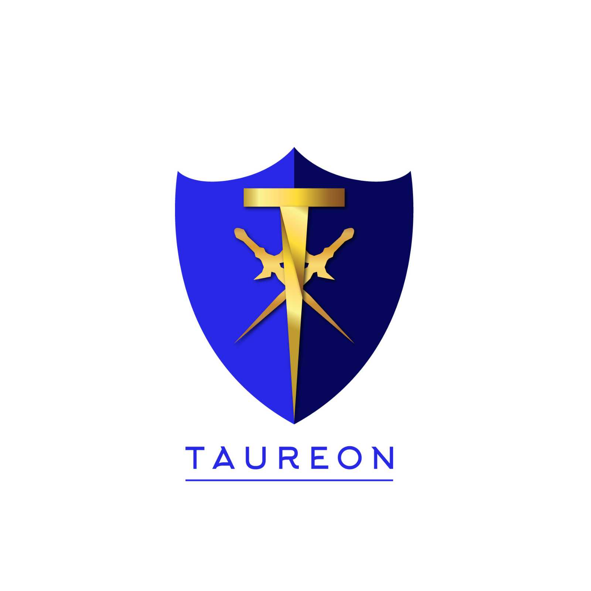
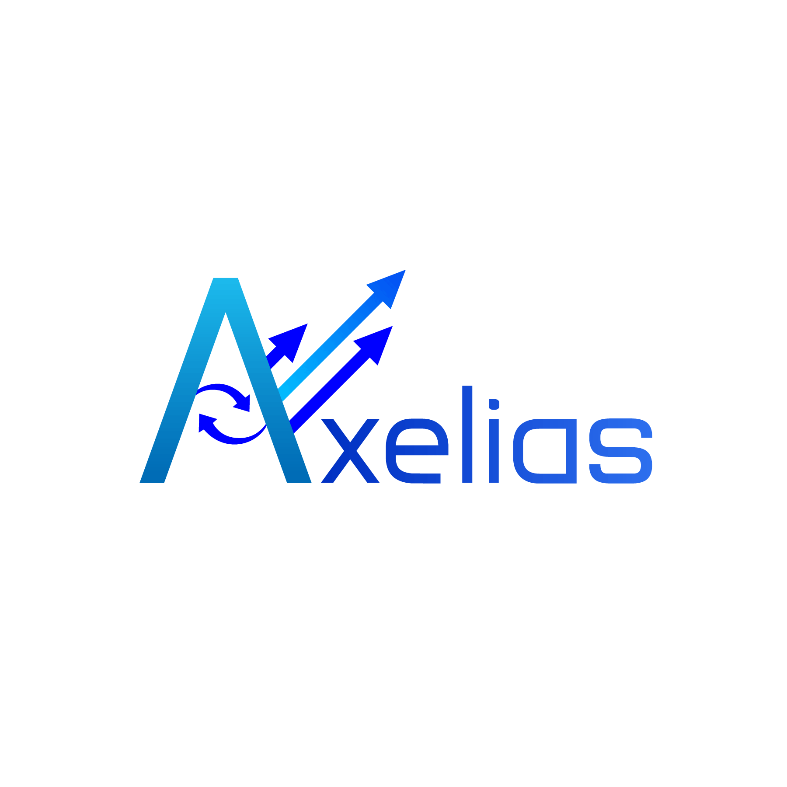

Graphic Design Work
Planet Print Logo :

Planet Print ia an eco-friendly print company. Their logo should represent their eco-friendly nature. They want to symbolize it by incorporating a planet earth in the logo. They are satisfied with the result, but they wanted the planet to show a bit more and the modifications were made. They are satisfied with the result.
23 infomedia logo :

23 infomedia is a small sacle information and media relations company. The audience are normal citizens, hence the logo should be as simple as possible. They want to depict the flow of information without making the logo complex. They are satisfied with the result.
Taureon Logo :

Taureon is a proposed crypocurrency. The logo should depict it's strength and luxury(money to be precise). The shield represents it's strength, trust and worthiness. The golden sword represents it's money. They are satisfied with the result.
Axelias Logo :

Axelias is a market and financial related consultancy firm. They want to represent the Yin and Yang as a way to depict financial flow and their continous growth over time. They are satisfied with the result.
With Wool Logo :

With Wool is a website for learning 'how to knit wollen clothings'. They want knitting to be depicted in their logo in their logo. They are satisfied with the result.
Some other work :
You can check some of my other work here.